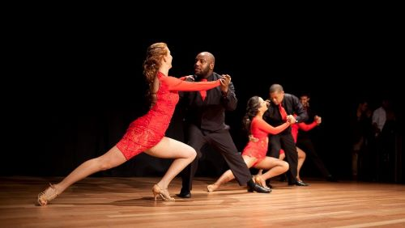
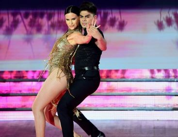
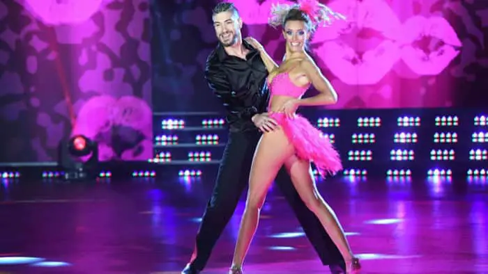

-PhotoRoom.png-PhotoRoom.png)
Es un baile creado por gente de habla Hispana del Caribe. Aparece en la decada del 60 con la combinacion o mezcla de los ritmos y bailes latinos: son rumba cubana, guaracha, mambo, etc. con el jazz, por lo que viene a ser una salsa, y de ahi su nombre, de ritmos y estilos entremezclados. Se puede bailar en pareja, solo, o en forma grupal. Los artistas mas influyentes de este ritmo son Celia Cruz y Marc Anthony, entre otros.
Es un ritmo musical de percusion y cuerdas originario de Republica Dominicana, que tiene sus raices en el son cubano y los ritmos africanos. El estilo musical es un hibrido, derivado de una mezcla del bolero y otros ritmos latinos y caribeños. Tiene su inicio a comienzo del siglo XX. Al principio, fue considerado como un ritmo de clase baja o de los pobres, por ser escuchada y bailada en barrios pobres, burdeles y campos. A fines de los 80 se reconocio su alta calidad musical y ritmica, y logro internacionalizarse. Los artistas mas influyentes de este ritmo son: Jose Manuel Calderon, Rafael Encarnacion y Juan Luis Guerra, entre otros.
A partir de la segunda mitad del siglo XIX que se comienza a expandir este estilo de baile. Primero se le conocio como musica campesina hasta que comenzo a llegar a centros urbanos con la adicion del acordeon. En los 70 el merengue exploto para siempre. El merengue es la adrenalina hecha musica. Un ritmo rapido, divertido y amigo de las fiestas populares. Es la musica nacional de Republica Dominicana. Los artistas mas influyentes de este ritmo son: Chichi Peralta y Luis Diaz, entre otros.
